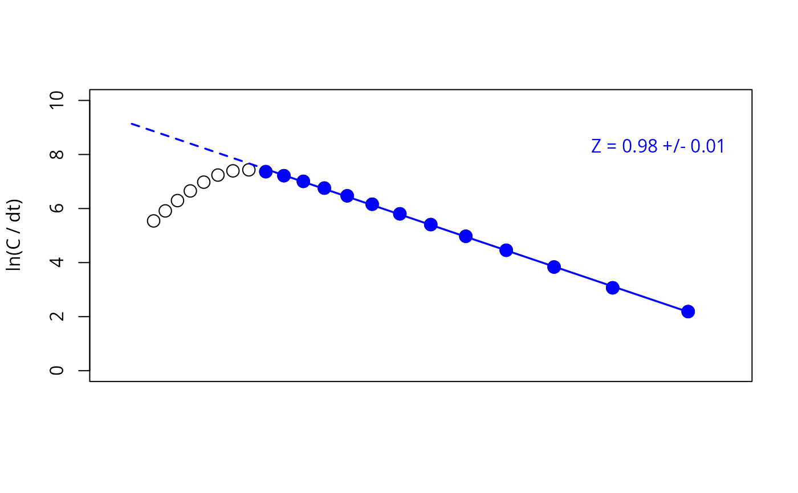
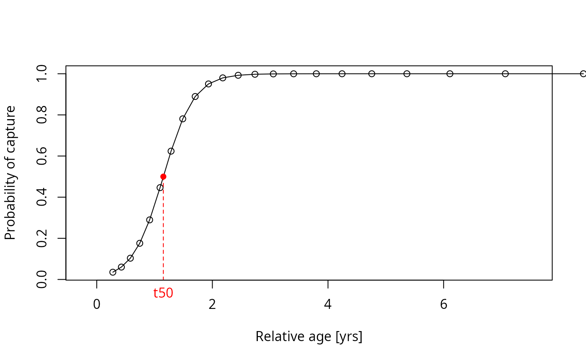

This function applies the (length-converted) linearised catch curve to age composition and length-frequency data, respectively. It allows to estimate the instantaneous total mortality rate (Z). Optionally, the gear selectivity can be estimated and the cumulative catch curve cna be applied.
Usage
catchCurve(
param,
catch_columns = NA,
cumulative = FALSE,
calc_ogive = FALSE,
reg_int = NULL,
reg_num = 1,
auto = FALSE,
plot = TRUE,
boot = NULL,
agerange = NULL,
natMort = NULL,
robustReg = FALSE,
yearSel = NA,
yearCombine = FALSE,
binSize = NA,
CI = 95
)Arguments
- param
a list consisting of following parameters:
midLengthsorage: midpoints of the length classes (length-frequency data) or ages (age composition data),Linf: infinite length for investigated species in cm [cm], required for length-frequency data, either inparam$par(e.g. withlfqModify(lfq, par = res$par)afterELEFAN_GA) or directly inparam,K: growth coefficent for investigated species per year [1/year],t0: theoretical time zero, at which individuals of this species hatch,catch: catches, vector or matrix with catches of subsequent years if the catch curve with constat time intervals should be applied;
- catch_columns
numerical; indicating the column of the catch matrix which should be used for the analysis. Several columns are summed. With
lfqModify(lfq, vectorise_catch = TRUE), the catch matrix has one column per year (or is a vector for data of a single year, in which casecatch_columnsis not used).- cumulative
logical; if TRUE the cumulative catch curve is applied (Jones and van Zalinge method)
- calc_ogive
logical; if TRUE the selection ogive is additionally calculated from the catch curve (only if
cumulative = FALSE)- reg_int
instead of using the identity method a range can be determined, which is to be used for the regression analysis. If equal to NULL identity method is applied (default). The two values are the numbers of the first and last point used for the regression line, counted from the smallest length or age class (e.g.
reg_int = c(9, 21)uses the 9th to the 21st point), not lengths or ages. For multiple regression lines provide list with the two points for the regression line in each element of the list.- reg_num
integer indicating how many separate regression lines should be applied to the data. Default 1.
- auto
logical; no interactive functions used instead regression line is chosen automatically. Default = FALSE
- plot
logical; should a plot be displayed? Default = TRUE
- boot
optional; an object of class `lfqBoot` with bootstrapped growth parameters (e.g. from
ELEFAN_GA_boot). If provided, the length-converted catch curve is applied to each resampled data set (re-created withlfqResampleand the seeds of `boot`) with the growth parameters of the resample. `param` has to be the lfq data used for the bootstrapped growth analysis. The points for the regression line are chosen automatically for each resample (see Details) unless `reg_int` is provided.- agerange
optional; with `boot`, a vector with the minimum and maximum relative age to which the automatically chosen regression line is limited.
- natMort
optional; with `boot`, the name of the column in `boot$bootRaw` with natural mortality estimates (e.g. "M_Then" from
M_empiricalorMstochThen). If provided, the fishing mortality is calculated (FM = Z - M).- robustReg
logical; with `boot`, should the last point be excluded from the automatically chosen regression line if the slope of the last three points is much flatter than the slope of the whole descending limb (e.g. due to lower selectivity for large fish)? Default = FALSE
- yearSel
optional; with `boot`, year(s) to be used if the lfq data covers several years.
- yearCombine
logical; with `boot`, should the catches of several years be combined? Default = FALSE
- binSize
optional; new bin size (in cm) for the length classes. The catches are summed in bins of this size, starting at 0, and empty bins at both ends are removed (as in
lfqModifywith `bin_size`). With `boot`, the resampled data are re-binned.- CI
with `boot`, percentage for confidence intervals (Default: 95)
Value
A list with the input parameters and following list objects:
classes.num, tplusdt_2, t_midL, or ln_Linf_L: age, relative age or subsitute depending on input and method,
lnC or lnC_dt: logarithm of (rearranged) catches,
reg_int: the interval used for the regression analysis,
linear_mod: linear model used for the regression analysis,
Z: instantaneous total mortality rate, confidenceInt
se: standard error of the total mortality;
confidenceInt: confidence interval of the total mortality;
in case calc_ogive == TRUE, additionally:
intercept: intercept of regression analysis,
linear_mod_sel: linear model used for the selectivity analysis,
Sobs: observed selection ogive,
ln_1_S_1: dependent variable of regression analysis for selectivity parameters,
Sest: estimated selection ogive,
t50: age at first capture (age at which fish have a 50 probability to be caught),
t75: age at which fish have a 75
L50: length at first capture (length at which fish have a 50 probability to be caught),
L75: length at which fish have a 75
If `boot` is provided, the lfqBoot object with the additional
columns `Z`, `FM` (if `natMort` is provided), `L50` and `L75` (if
`calc_ogive = TRUE`) in `bootRaw`, `maxDen`, `median` and `CI`. The
intercepts and points of the regression lines are stored in `misc`
(for plotBoot). Resamples for which the catch curve cannot
be fitted (e.g. no descending limb) get NA, and a warning gives their
number.
Details
This function includes the identify function, which asks you to
choose two points from a graph manually. The two points which you choose by clicking
on the plot in the graphical device represent the start and end of the data points,
which should be used for the analysis. Based on these points the regression line
is calculated.
When the selection ogive
is calculated by means of the catch curve the assumption is made, that Z is constant
for all year classes or length groups, respectively. Accoring to Sparre and Venema
(1998) this assumption might be true, because F is smaller for young fish
(Selectivity) while M is higher for young fish (high natural mortality). The selectivity
for not fully exploited old fish (e.g. due to gillnet fishery) can not be calculated yet
by use of the catch curve.
Based on the format of the list argument catch and whether the argument
catch_columns is defined, the function automatically
distinguishes between the catch curve with variable parameter system (if catch is a
vector) and the one with constant parameter system (if catch is a matrix or a
data.frame and catch_columns = NA). In the case of the variable parameter
system the catches of one year are
assumed to represent the catches during the entire life span of a so called
pseudo-cohort.
The cumulative catch curve does not allow for the estimation of the selectivity
ogive.
With `boot`, the catches of each resampled data set are summed per year (see `yearSel` and `yearCombine`) and the regression line is chosen automatically: from the point after the highest point of the catch curve to the last point with ln(C/dt) > 0.5 (optionally limited with `agerange` and `robustReg`). If the selection ogive cannot be estimated because fewer than two length classes with catch are below the regression line (e.g. the descending limb starts at the first length class), knife-edge selection is assumed: `L50` = `L75` = lower limit of the first length class of the regression line (these resamples are marked in `misc$knifeEdge`).
References
Baranov, F.I., 1926. On the question of the dynamics of the fishing industry. Nauchn. Byull. Rybn. Khoz, 8 (1925), 7-11
Beverton, R.J.H. and S.J. Holt, 1956. A review of methods for estimating mortality rates in exploited fish populations, with special reference to sources of bias in catch sampling. Rapports et Proces verbaux des Reunions, Conseil Table3
Chapman, D., and D.S Robson, 1960. The analysis of a catch curve. Biometrics, 354-368
Edser, T., 1908. Note on the number of plaice at each length, in certain samples from the southern part of the North Sea, 1906. Journal of the Royal Statistical Society, 686-690
Heincke, F., 1913. Investigations on the plaice. General report. 1. The plaice fishery and protective regulations. Part I. Rapp.P.-v.Reun.CIEM, 17A:1-153 + Annexes
ICES, 1981. Report of the Ad hoc working group on the use of effort data in assessment, Copenhagen, 2-6 March 1981. ICES C.M. 1981/G:5 (mimeo)
Jones, R., and N.P. Van Zalinge, 1981. Estimates of mortality rate and population size for shrimp in Kuwait waters. Kuwait Bull. Mar. Sci, 2, 273-288
Pauly, D., 1983. Length-converted catch curves: a powerful tool for fisheries research in the tropics (part I). ICLARM Fishbyte, 1(2), 9-13
Pauly, D., 1984. Length-converted catch curves: a powerful tool for fisheries research in the tropics (part II). ICLARM Fishbyte, 2(1), 17-19
Pauly, D., 1984. Length-converted catch curves: a powerful tool for fisheries research in the tropics (III: Conclusion). ICLARM Fishbyte, 2(3), 9-10
Ricker, W.E., 1987. Computation and interpretation of biological statistics of fish populations. Bull.Fish.Res.Board Can., (191):382 p.
Robson, D.S., and D.G. Chapman, 1961. Catch curves and mortality rates. Trans.Am.Fish.Soc., 90(2):181-189
Sparre, P., Venema, S.C., 1998. Introduction to tropical fish stock assessment. Part 1. Manual. FAO Fisheries Technical Paper, (306.1, Rev. 2). 407 p.
Van Sickle, J. 1977. Mortality rates from size distributions: the application of a conservation law. Oecologia, Berl., 27(4):311-318
Examples
# \donttest{
#_______________________________________________
# Variable paramter system (with catch vector)
# based on length frequency data
data(goatfish)
output <- catchCurve(goatfish)
#> Warning: NaNs produced
#> Either start an interactive session to choose points, use reg_int to define the points for the regression analysis or use auto=TRUE.
summary(output$linear_mod)
#> Length Class Mode
#> 0 NULL NULL
# based on age composition data
data(whiting)
catchCurve(whiting, catch_columns = 1)
#> Either start an interactive session to choose points, use reg_int to define the points for the regression analysis or use auto=TRUE.
#> NULL
#_______________________________________________
# Constant parameter system based on age composition data (with catch matrix)
catchCurve(whiting)
#> Please be aware that you provided the catch as a matrix without specifiying any columns for
#> the analysis. In this case the methods applies by default the catch curve with constant
#> parameter system (refer to the help file for more information).
#> Age/length classes and the real cohort in the catch matrix
#> do not have the same length. The missing age/length
#> classes will be omitted.
#> Either start an interactive session to choose points, use reg_int to define the points for the regression analysis or use auto=TRUE.
#> NULL
#_______________________________________________
# Cumulative Catch Curve
# based on length frequency data
data(goatfish)
catchCurve(goatfish, cumulative = TRUE)
#> Warning: NaNs produced
#> Either start an interactive session to choose points, use reg_int to define the points for the regression analysis or use auto=TRUE.
#> NULL
# based on age composition data
data(synCAA2)
catchCurve(synCAA2, cumulative = TRUE)
#> Either start an interactive session to choose points, use reg_int to define the points for the regression analysis or use auto=TRUE.
#> NULL
#_______________________________________________
# Catch Curve with estimation of selection ogive
data(synLFQ3)
output <- catchCurve(synLFQ3, calc_ogive = TRUE)
#> Either start an interactive session to choose points, use reg_int to define the points for the regression analysis or use auto=TRUE.
summary(output$linear_mod_sel)
#> Length Class Mode
#> 0 NULL NULL
# }
# the same with predefined selection for regression line:
data(synLFQ3)
output <- catchCurve(synLFQ3, calc_ogive = TRUE, reg_int = c(9,21))
 plot(output, plot_selec = TRUE)
plot(output, plot_selec = TRUE)

